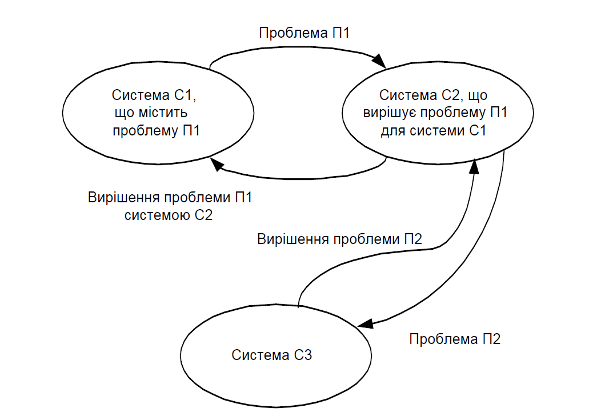
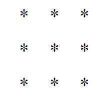

1. Поняття системи
Термін
“система” використовується у тих випадках, коли треба охарактеризувати об’єкт, який досліджується чи проектується як дещо ціле, складне, про який неможливо одразу дістати просте уявлення. Існує понад 30 визначень системи. В енциклопедії система визначається прямим перекладом з грецької мови як об’єднання частин.Найбільш відомі визначення системи такі
:– це множина елементів, що знаходяться в певних співвідношеннях і зв’язках один з одним, взаємодіють між собою, утворюють певну цілісність, як ціле взаємодіють із навколишнім середовищем.Система
Система
- це сукупність елементів, яка має нові властивості, відсутні у кожного елемента.Система
– це сукупність засобів вирішення проблеми.Ці та інші визначення системи характеризують різні підходи до розгляду систем
, аналізу закономірностей їх розвитку та функціонування.Розрізняють матеріальні й абстрактні
(ідеальні) системи.Матеріальні системи
– це системи, утворені засобами матеріального світу. Системи неживої природи (природні утворення: атоми, молекули, астрономічні об’єкти, хімічні сполуки та системи, створені людиною), системи живої природи (біологічні організми, популяції, екосистеми) і соціальні системи (етнос, нація, держава, партії та ін.).Матеріальні системи можуть бути створені людьми або природ
ними утвореннями, які існують незалежно від людини. Перші системи називають штучними, другі природними. Проміжне положення займають змішані системи.Абстрактні
(ідеальні) системи – це системи, створені нашим мисленням, продукти розумової діяльності. До них відносяться мови, знакові системи, наукові й релігійні теорії тощо.2.
Властивості системПоняття
“система” найкраще конкретизується у процесі розгляду її властивостей. В.Н Спіцнандель у своєму підручнику [3] виділяє чотири основні властивості системи, а саме:система перш за все є сукупністю елементів. При певних умовах елементи можуть розглядатись як системи;·
·
між елементами існують суттєві зв’язки чи властивості, які за силою зв’язку перевищують зв’язки між елементами системи та елементами, які не входять у систему. Під суттєвими зв’язками розуміють такі, які закономірно з необхідністю визначають інтегровані властивості системи. Ці суттєві зв’язки визначають систему, відділяючи її від простої сукупності (конгломерату) і виділяють її з навколишнього середовища у вигляді цілого об’єкта;·
системі властива певна організація, що виявляється у зменшенні ентропії системи в порівнянні з ентропією сукупності елементів, які складають систему. Поняття ентропії більш детально розглядається далі. Воно визначає ступінь неорганізованості, безладу, хаосу. Організація системи приводить до зменшення безладу, зменшення кількості можливих станів системи;·
існування інтеграційних властивостей, тобто властивостей, які властиві системі в цілому і не властиві жодному елементу системи.Тобто властивості системи не зводяться тільки до властивостей її еле
ментів. Розглянемо більш детально ці властивості системи і виділимо основні ознаки. Такими ознаками системи є.цілісність;·
·
якісна визначеність;·
відмежованість відносно середовища;·
гетерогенність і структурованість;·
взаємодія частин системи між собою;·
взаємодія і зв’язок з навколишнім середовищем;·
наявність інтегральних характеристик;·
емерджентність;·
наявність цілей та їх сукупності, ціленаправленість.Наведемо в загальних рисах короткі характеристики вказаних ознак системи
.Цілісність означає
, що система - це об’єднання частин, яке по відношенню до навколишнього оточення виступає як одне ціле. Під якісною визначеністю розуміють, що система - це така сукупність елементів, яка має свої якісні ознаки, характерні тільки для даної системи і відсутні в інших системах. Ці ознаки проявляються тільки у даній системі. Вони визначають відношення до інших систем. Наприклад, система “автомобіль” має якісні ознаки, які характеризують його в цілому. Такими ознаками є: маса, потужність, швидкість, габаритні розміри, комфортність, естетичність та багато інших. Якісні ознаки іншої системи, наприклад, тролейбуса, можуть бути зовсім іншими: споживання електроенергії, маневреність, місткість тощо. Тобто система є цілісністю, що має властиві тільки їй якісні ознаки, за якими вона відрізняється від інших систем. Якість здебільшого може бути виражена кількісними величинами, наприклад, місткість тролейбуса 105 пасажирів. Але наявність кількісного визначення не обов’язкова, наприклад, якісна ознака естетичності не може бути виражена кількісно.Відмежованість системи від середовища означає
, що всяка система має свої границі. Границі відділяють систему від навколишнього середовища. Вони визначають, що входить в систему і що в неї не входить, є зовнішнім по відношенню до системи. Переважна більшість систем має чіткі границі. Проте границі системи не завжди можуть визначатися однозначно. Деколи визначити границі дуже складно. Наприклад, визначення границь системи “річка”: входять у систему її береги, чи “річка” закінчується там, де протікає вода? Якщо берег входить в систему, то на якій відстані від води проходить границя системи “річка”? На відстані 1 м, 10 м чи 100 м? А пойма річки входить в систему чи ні? Де її границя? Отже, навіть таке просте поняття, як визначення границь системи має особливості і їх необхідно враховувати при визначенні та дослідженні систем. Це стосується й інших характеристик системи.Гетерогенність системи і структурованість
. Під гетерогенністю розуміють неоднорідність, те, що система складається з різних частин. У визначенні системи вказано, що система це сукупність елементів. Але система - це не проста сукупність. Структурованість означає, що система є певним чином організованою сукупністю, має певну структуру. Поняття структурованості світу ми вже розглядали. Світ являє собою певну сукупність структур, організованих на різних рівнях і взаємопов’язаних між собою. Всяка система також має певну структуру. Ця структура забезпечує об’єднання елементів системи таким чином, щоб дане об’єднання мало свою якісну визначеність, цілісність.Гетерогенність поняття більш вузьке
, воно просто означає неоднорідність складу, наявність складових частин. Наприклад, система “тролейбус” має такі частини, як двигун, ходова частина, кузов, електрообладнання тощо. Двигун, ходова частина складаються з окремих вузлів, а кожен вузол з окремих деталей. Така будова системи “тролейбус” відповідає поняттю структурованості.Взаємодія частин системи між собою означає
, що в системі частини взаємодіють між собою і тільки у даній взаємодії вони утворюють певну систему. З наведеного прикладу зрозуміло, що тролейбус буде системою тоді, коли складові його частини: двигун, ходова частина, електрообладнання певним чином взаємодіють між собою. Причому ця взаємодія однозначна, визначена, обумовлена в найдрібніших деталях.Взаємодія з навколишнім середовищем означає
, що система як ціле взаємодіє з іншими системами. Це зумовлене цілісністю системи, її якісною визначеністю. Під час взаємодії з навколишнім середовищем виявляються властивості системи. За характером взаємодії розрізняють відкриті й закриті системи. Відкрита система - це система, яка активно обмінюється з навколишнім середовищем речовиною, енергією та інформацією. У закритій системі такий обмін обмежений або відсутній. Поняття відкритості системи має велике значення при вивченні питання розвитку й життєвого циклу системи. Для закритих систем характерні процеси старіння. У термодинаміці - дисципліні, що вивчає явища передачі енергії, процеси старіння визначаються зростанням ентропії. Ентропія – це характеристика, яка показує ступінь безладу системи, її невпорядкованість, хаотичність. Відповідно до другого начала термодинаміки в усіх закритих системах ентропія може тільки зростати. У результаті цього закриті системи прагнуть до дифузного, невпорядкованого стану. У них зникає будь-яка структурованість, зникають будь-які процеси передачі енергії, матерії. Цей стан називають “тепловою смертю”. Зростання ентропії - універсальний закон природи, яким зумовлені процеси старіння, розпаду, загибелі замкнутих систем. На відміну від замкнутих систем у відкритих системах крім процесів зростання ентропії є процеси, які приводять до її зменшення, до зростання організованості й впорядкованості системи. Під поняттям інтегрованості розуміють, що в системі властивості окремих елементів об’єднуються і виступають разом у новій якості. Емерджентність – це поява нових якостей, не властивих елементам, що складають систему. Кожна система є сукупністю певних частин, певних елементів.Особливістю системи є те
, що в результаті об’єднання декількох елементів і утворення системи з’являються нові властивості, яких не має жоден елемент до створення системи. Ця властивість системи і називається емерджентністю. Емерджентність (від англ. emergent – несподіване виникнення) визначає, що властивості системи не зводяться до властивостей елементів, з яких вона складається. Емерджентність системи може характеризувати ступінь організованості системи. Чим більше характеристики системи відрізняються від характеристик елементів, з яких вона утворена, тим більш організованою є система. Щоправда, величина емерджентності не має числового вираження і характеристика може бути тільки якісною. Наприклад, властивості автомобіля не зводяться до властивостей двигуна, кузова, ходової частини. У нього з’являється ряд нових якісних ознак, відмінних від ознак складових частин. Ще один приклад. Досить високо організованою системою є комп’ютер. Його властивості суттєво відрізняються від властивостей елементів, які входять до його складу, а саме мікросхем, вимикачів, елементів пам’яті, з’єднувальних провідників тощо. Якщо брати живі організми, то ступінь їх організованості значно вищий, оскільки неможливо звести характеристики до характеристик окремих частин організму.Наявність цілей
, ціленаправленість – одна з головних ознак системи. Кожна система має певну ціль існування або створена для певної цілі. У системи може бути одна ціль або сукупність цілей. У випадку сукупності цілей всі вони утворюють певну ієрархію, в якій є головні, першочергові цілі й другорядні, підпорядковані головним. Визначення цілей системи є завданням, що має свої особливості. Цілі по-різному визначаються для систем штучного походження й природних систем.Штучні системи
, системи, створені людиною, завжди мають суб’єктивні цілі, тобто цілі, поставлені суб’єктом, який створив систему. Визначити цілі таких систем, як правило, неважко. Наприклад, телевізор створений для прийому та відображення інформації. Автомобіль створений для перевезення людей і вантажів. Автобус, трамвай, тролейбус, метрополітен, таксі служать одній цілі – перевезенню людей, але вони мають свої особливості, служать для дещо інших цілей, відмінних для кожного з вказаних видів транспорту. Досить точно та однозначно сформулювати ціль штучних систем подекуди буває важко.Природні системи мають об
’єктивні цілі. Зрозуміти ці цілі не завжди просто. Ще важче їх сформулювати. Наприклад, як сформулювати ціль існування людини? Під час вирішення питання визначення цілей системи допомагає поділ цілей на суб’єктивні й об’єктивні. Суб’єктивні цілі – це цілі, для яких створена система певним суб’єктом. Об’єктивні цілі – це стан ідеального майбутнього, до якого прагне система в своєму життєвому циклі. Як правило, таким майбутнім є продовження роду, зростання, розвиток системи. Структура системи, її склад, взаємодія частин завжди визначаються ціллю системи.Наведені характеристики систем більш детально й глибоко ви
вчаються в подальшому.3.
Система і проблемаСистемний аналіз являє собою методологію вирішення пробле
ми, тобто сукупність методів та алгоритмів вирішення проблеми, заснованих на концепції системи й системному підході. Дане визначення досить категоричне. Якби існувала така сукупність методів та алгоритмів, то, напевно, і не було б проблем. Той, хто володів би всіма такими методами вирішення будь-якої проблеми, міг би претендувати на роль людини, яка може все і вирішує будь-які проблеми. На жаль, це далеко не так, все набагато складніше.Розглядаємо поняття проблеми
. Проблема – це складне теоретичне або практичне завдання, що вимагає свого вирішення, але наявних в даній системі засобів вирішення недостатньо. У науці - це ситуація, яка виступає у вигляді протилежних позицій, пояснень, будь–яких явищ, об’єктів, процесів, адекватної теорії вирішення якої немає.Проблема виникає не одразу
. Спочатку вона виступає як неусвідомлене незадоволення станом речей, а в науці це незадовільне пояснення явищ, одержання неоднозначних, незрозумілих результатів. Пізніше це незадоволення усвідомлюється. Стає зрозумілим, що саме нас не влаштовує. Далі визначається, чому дана ситуація нас не влаштовує. Сформована проблема виникає тоді, коли повністю усвідомлена ситуація, але відсутні засоби для її вирішення.Важливим етапом вирішення проблеми є формулювання цілей діяльності
. Цілі діяльності дозволяють зрозуміти, що треба зробити для вирішення проблеми. Якщо ми вірно сформулювали цілі, то це вже значний крок у вирішенні проблеми. Але якраз цілі діяльності не завжди можна чітко сформулювати. Одні цілі можуть приводити до вирішення проблеми, інші - до її загострення. Оскільки немає прямого шляху вирішення проблем, а деколи виникають труднощі в її формулюванні, то потрібно детальніше вивчити дане питання.Перш за все проблема завжди виникає у певній системі
. Будемо говорити, що система С1 містить проблему П1. Взагалі всяка система може містити багато проблем, тому часто говорять про проблематику системи. Нам необхідно вирішити одну з проблем системи, а саме П1. Діалектика вирішення проблеми така, що вирішивши одну проблему, ми змінюємо систему. Нова система С2 вже містить нову проблему. Подекуди ця проблема для нас є не суттєвою і ми можемо вважати , що система С2 вирішує проблему П1 для системи С1. Подальші кроки направлені на вирішення проблеми С2. У результаті ми переходимо до нової системи. На рис.2 показано декілька послідовних кроків діалектики розв’язання проблеми.
Рис
. 2 - Співвідношення між проблемою і системоюОтже
, поняття проблеми нерозривно пов’язане з поняттям системи. Практичне розв’язання проблеми суттєво залежить від системи, в рамках якою проблема розв’язується. Інколи розширення системи приводить до розв’язання проблеми чи значного зниження труднощів розв’язання. Як приклад можна навести відоме завдання: з’єднати дев’ять точок за допомогою чотирьох ліній, не відриваючи ручки від паперу, а саме
Рис. 3 – Завдання: З’єднати точки чотирма прямими лініями, не відриваючи ручки від паперу
Якщо для вирішення завдання розглядати як систему тільки на
ведені точки і обмежитися областю аркуша паперу, де вони розміщені, то задачу розв’язати неможливо. Але як тільки ми розширимо область паперу, в якій можна проводити лінії, то рішення знаходиться досить просто.Ще один приклад з будівництва. Якщо поставити завдання звести будинок так, щоб у всіх кімнатах була добра природна вентиляція, то вирішити цю проблему важко. Але якщо розширити систему і спроектувати мікрорайон з будинками, то при певному розміщенні будинків проблема вентиляції кімнат вирішується доволі просто за рахунок потоків повітря, які дують уздовж вулиць, з чим ми часто зустрічаємось, коли наші мікрорайони продуваються наскрізь. Наведені вище міркування дозволяють навести одне з багатьох визначень системи, а саме: система – це сукупність засобів вирішення проблеми.
Контрольні запитання
Сформулюйте визначення системи.1.
2.
Які системи відносять до матеріальних?3.
Наведіть приклади ідеальних систем.4.
Які основні ознаки системи?5.
Що розуміють під поняттям “цілісність системи”?6.
Що розуміють під поняттям “якісна визначеність системи”?7.
Як поділяють системи за їх походженням?8.
У чому полягає проблема визначення границь системи?9.
Як співвідносяться інтенсивності взаємодії частин системи та системи і середовища?10.
Що розуміють під поняттям “гетерогенність системи”?11.
Що розуміють під поняттям “структура системи”?12.
Що означає поняття “ентропія”?13.
Поясніть зміст поняття “емерджентніть”.14.
Яка роль визначення цілей системи для вирішення проблеми?15.
Які цілі відносять до об’єктивних, а які до суб’єктивних?16.
Яким системам властиві суб’єктивні цілі?17.
Що таке проблемна ситуація?18.
Які послідовні кроки вирішення проблеми?19.
Яка послідовність виникнення проблемної ситуації?20.
Як зв’язані “проблема” і “система”?